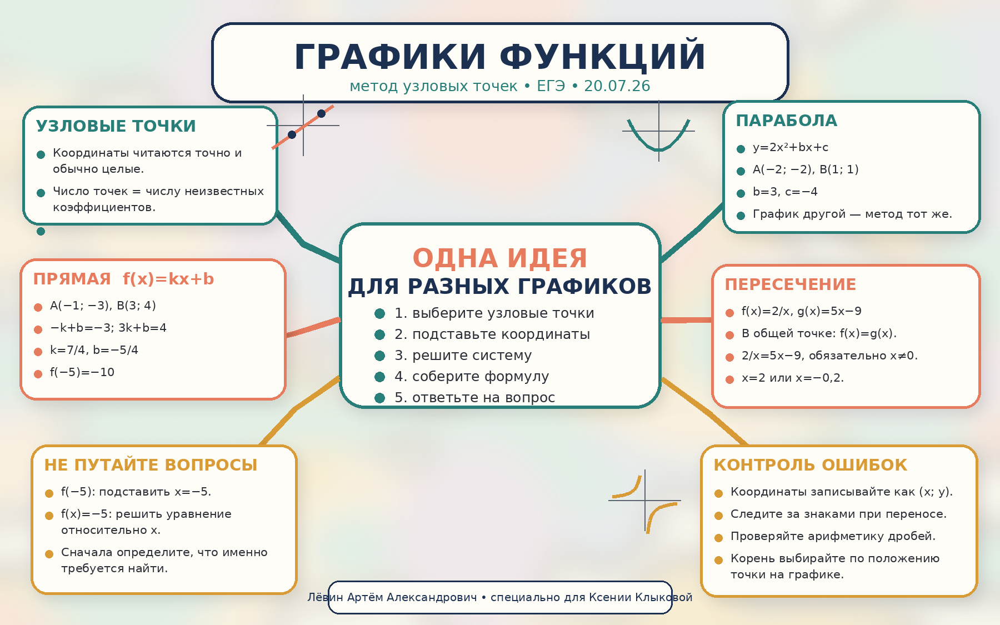

1. Сосчитайте неизвестные
Количество выбранных точек обычно равно числу неизвестных коэффициентов.
ЕГЭ · 20.07.26
Восстанавливайте формулу по узловым точкам, различайте значение функции и уравнение, находите пересечения графиков и выбирайте корень по рисунку.
Количество выбранных точек обычно равно числу неизвестных коэффициентов.
Ищите точки с целыми и хорошо читаемыми координатами.
Координата x идёт вместо аргумента, координата y — вместо значения функции.
Найдите коэффициенты, соберите формулу и выполните действие из вопроса.
Отметьте все неизвестные коэффициенты.
Например, в y = kx + b неизвестны два числа: k и b.
Для двух неизвестных нужны две точки, для одного — одна.
Предпочитайте целые координаты, близкие к нулю: так вычисления короче.
Всегда в порядке (x; y): сначала абсцисса, затем ордината.
Получите столько уравнений, сколько неизвестных коэффициентов.
Следите за переносами, дробями и знаками.
Подставьте найденные коэффициенты и проверьте исходную точку.
Вычислите f(a), решите f(x)=a или найдите нужную координату пересечения.
Результат — значение функции, то есть координата y.
Результат — абсцисса точки графика с ординатой −5.
Прямая f(x) = kx + b проходит через A(−1; −3) и B(3; 4).
Сначала коэффициенты k, b, затем значение f(−5).
Два неизвестных коэффициента требуют двух независимых уравнений.
Ответ: −10.
В формуле y = kx + b неизвестны оба коэффициента. Сколько узловых точек нужно?
Пусть y = 2x² + bx + c проходит через A(−2; −2) и B(1; 1). Неизвестны b и c, поэтому берём две точки.
Проверка: обе исходные точки удовлетворяют формуле.
Степень, дробь или другая зависимость могут быть иными.
Точка графика всегда удовлетворяет его формуле.
Не берите лишние точки, но и не пытайтесь найти два коэффициента по одной точке.
Для одного неизвестного k достаточно одной точки.
В точке пересечения ординаты графиков совпадают.
После решения уравнения соотнесите каждый корень с положением точки на рисунке.
По рисунку B расположена между −1 и 0, поэтому её абсцисса равна −0,2. Корень 2 относится к другой точке пересечения.
Записывайте (x; y), а не (y; x).
Например, перенос −4 вправо даёт +4.
Перед умножением равенства на x зафиксируйте x ≠ 0.
Выбирайте корень по указанной точке и её положению на графике.
Дробные координаты допустимы, но целые точки обычно сокращают вычисления.
Подставьте хотя бы одну исходную точку в восстановленную формулу.
Почему при решении 2/x = 5x − 9 нужно отдельно написать x ≠ 0?
Решения не показаны рядом с заданиями. Сначала выполните вычисления самостоятельно, затем откройте ответы.
Прямая f(x) = kx + b проходит через (0; 2) и (3; 8). Найдите f(−2).
Прямая проходит через (−2; 5) и (2; −3). Найдите x, если f(x) = 1.
Прямая f(x) = kx + b проходит через (−1; −4) и (2; 5). Найдите f(4).
Парабола f(x) = x² + bx + c проходит через (0; −3) и (2; 3). Найдите f(−2).
Парабола f(x) = 2x² + bx + c проходит через (−2; −2) и (1; 1). Найдите f(0).
Гипербола f(x) = k/x проходит через точку (2; 3). Найдите f(−3).
Найдите обе абсциссы точек пересечения графиков y = 2/x и y = 5x − 9.
Найдите абсциссу точки пересечения графиков y = 2/x и y = 5x − 9, лежащую в интервале (−1; 0).
Гипербола f(x) = k/x проходит через (−4; 2). Найдите x, если f(x) = −1.
Прямая f(x) = kx + b проходит через (1; 4) и (4; −2). Найдите абсциссу точки её пересечения с осью Ox и объясните, почему в этой точке f(x) = 0.
| № | Ответ |
|---|---|
| 1 | −2 |
| 2 | 0 |
| 3 | 11 |
| 4 | −1 |
| 5 | −4 |
| 6 | −2 |
| 7 | 2 и −0,2 |
| 8 | −0,2 |
| 9 | 8 |
| 10 | 3; в точке пересечения с осью Ox ордината равна нулю |
Нажмите кнопку, чтобы получить одну проверенную задачу.
